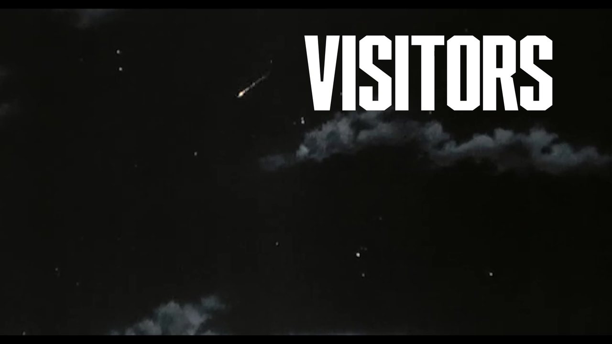
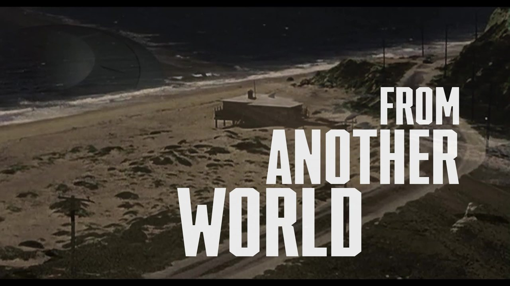
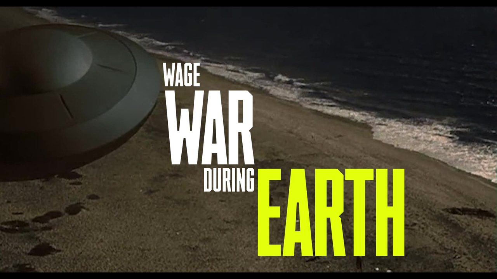
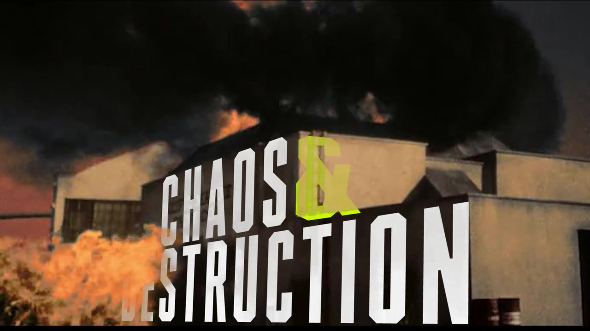
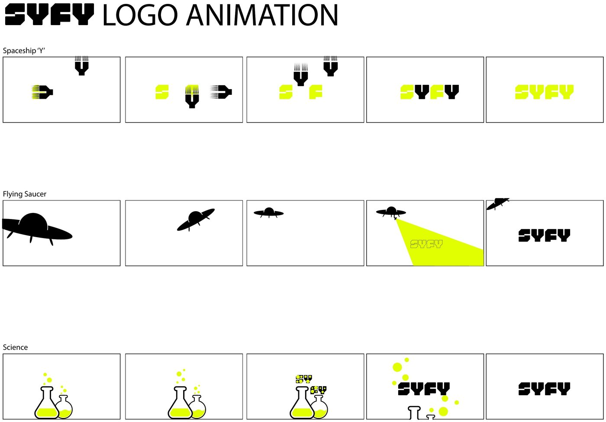
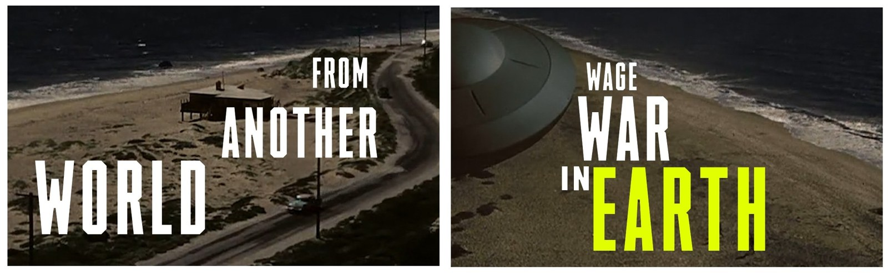
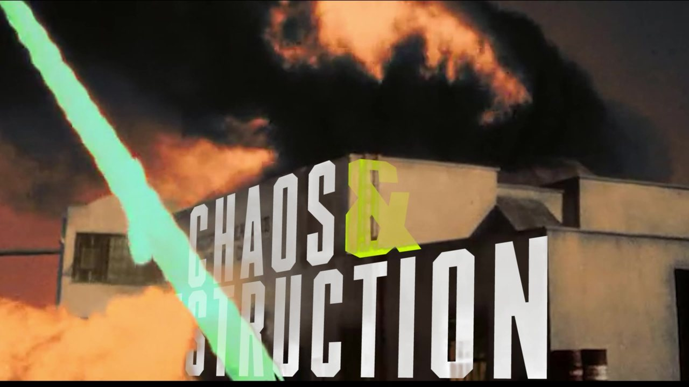
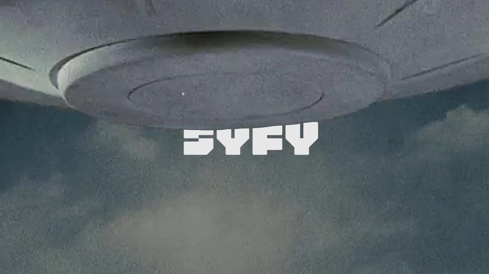

Final trailer · 30 seconds · for SYFY
A 30-second trailer for a SYFY broadcast of the colorized 1956 film. Each scene was built in After Effects with its own type and effects, then cut together in Premiere Pro.




Typography was the most important part of the brief, set in the network’s own typeface, SYFY Hero. The trailer ends with the SYFY logo animated inside the film.




Two full edits from the last review before the final.
Cut 1 · February 8 · 32 seconds
The first full edit with every scene in place.
Cut 2 · February 9 · 33 seconds
Refined, with black-and-white explosion shots from the film.
What changedThe final drops the black-and-white explosion shots and comes in at 30 seconds.
SoundThe trailer’s audio comes from an early montage in the film.
| Design | John Zwiers |
| Course | Motion Design 2, Loyola University New Orleans |
| Professor | Matt Normand |
| Film | Earth vs. the Flying Saucers, 1956, directed by Fred F. Sears, in a colorized version |
| Network | SYFY |
| Typeface | SYFY Hero |
| Sound | An early montage in the film |
| Made with | Adobe Illustrator, Adobe After Effects, Adobe Premiere Pro |
This film continued into my next project, Movie Title Time Machine, an opening title sequence for the same movie.